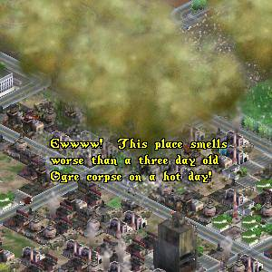
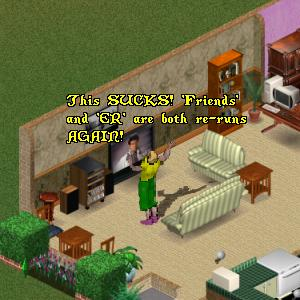

Overpopulated Cities Bursting at the Seams
Traffic Gridlock
Rampant Polution
 |
However, little by little ImaNewbie began
to adapt to his surroundings and began to
notice these things less and less. Instead
his mind becomes focused on the REAL
problems affecting our society like:
 |
But still, something was missing in ImaNewbie's existence.
And then one day all that changed. ImaNewbie was out
walking when he chanced to come upon a Yard Sale.
Something on a table beside a used computer system
attracted his eye. A box with an unusual logo, sort of
like a figure eight but with the top missing.
Quickly purchasing the copy of UO, ImaNewbie rushes
home and immediately began to install the software.
Feeling a strange sense of urgency. ImaNewbie signs on
and progresses to the character creation screen.
His character created, ImaNewbie sets about the
important task of clothing and arming his character
to survive the perils of virtual life in UO.
Striking out along a well-trodden path, ImaNewbie is filled
with a sense of excitement but at the same time can't shake
this strange sensation of Deja Vu. Oh well, it must just be
his imagination. Hrmmm.. what's this, a first meeting with
one of the other inhabitants of his new world?
Click the "Next" button below to contiue...